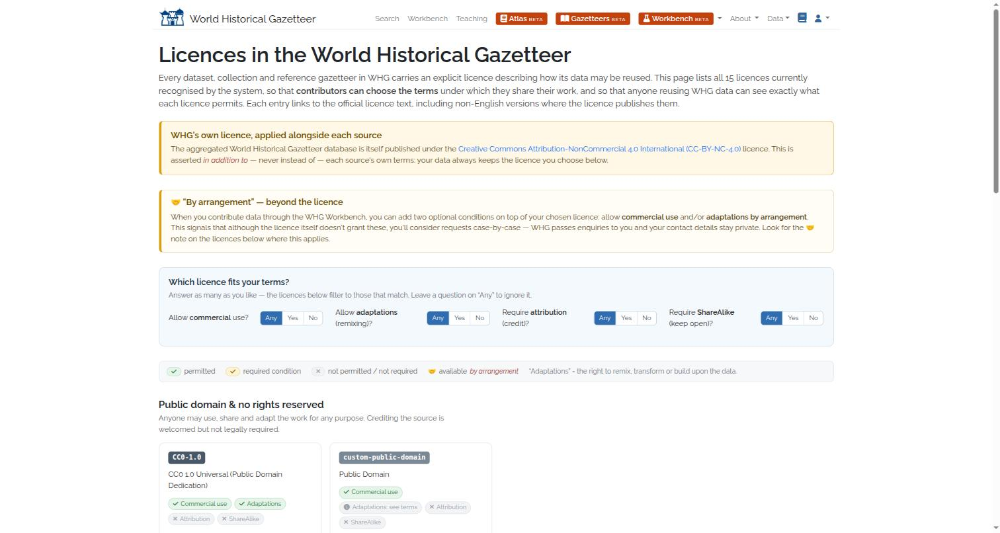
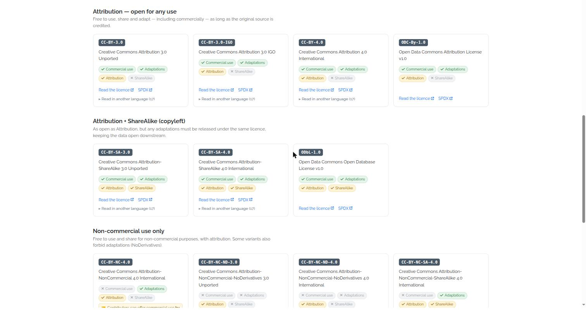
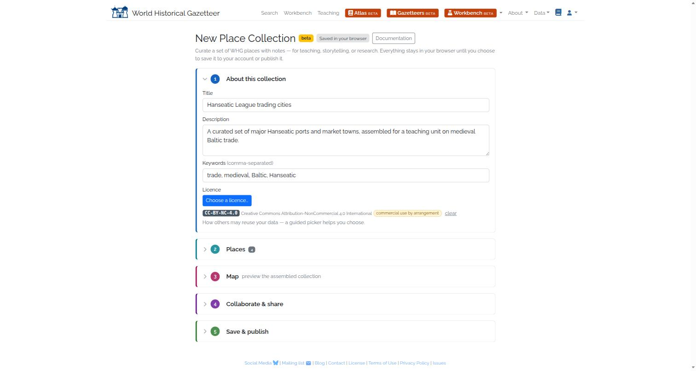
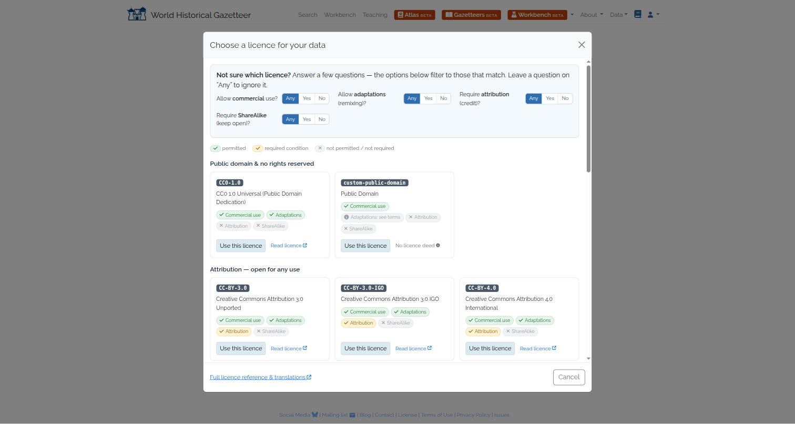
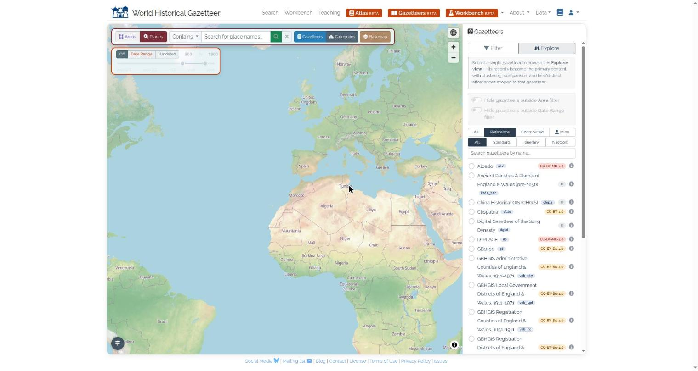
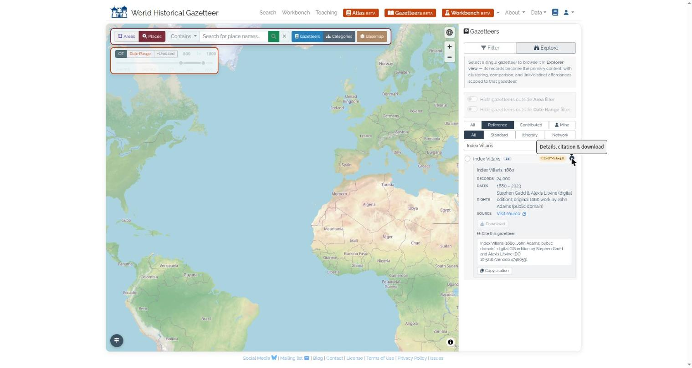
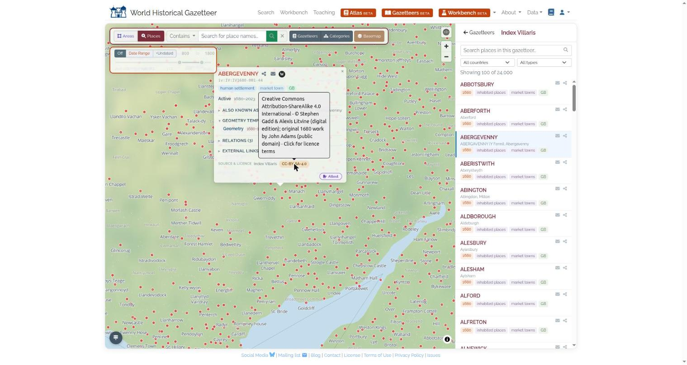

How the World Historical Gazetteer handles rights over aggregated place data — current state, working evidence, and the questions on which we seek guidance
The World Historical Gazetteer (WHG) is a Pitt-hosted platform that aggregates and links historical place data. Its index currently holds 50.5 million place records drawn from 26 distinct source gazetteers, plus several hundred contributed datasets. Those sources arrive under at least nine different licences — public domain, CC BY, CC BY-SA, ODbL, ODC-By and CC BY-NC — and for a small specialist remainder the terms are not yet recorded at all (§5).
The position we have adopted: WHG asserts no single blanket licence over the aggregate. Each source carries its own licence; that licence travels with the data wherever it is surfaced or leaves the platform; and WHG's own curation/aggregation licence (CC BY-NC-4.0) is asserted as an overlay alongside each source's terms, never instead of them.
Since an internal audit in June 2026 this has been substantially built and deployed — a controlled licence vocabulary, per-source licence capture at ingest, a contributor-facing licence picker, and licence badges surfaced throughout the public interface. §4 shows this working on the live site.
WHG is not principally a producer of data. It is a licensee of many upstream sources and a licensor to downstream users, and it cannot grant downstream what it does not hold upstream. Three consequences follow, and they shape everything in §4:
Four components, all now in production:
CC-BY-4.0, ODbL-1.0, CC0-1.0, …), each carrying explicit
permits-commercial, share-alike, attribution-required and no-derivatives flags,
plus a custom flag for bespoke non-SPDX terms. One vocabulary, one renderer, used everywhere a licence is
named — so the surfaces cannot drift apart again.redistributable (may WHG
re-host and hand out copies at all?) and downloadable (redistributable and within a volume cap).
Where a download is withheld, a reason is recorded — licence-restricted or volume-exceeds-cap.
One source is currently gated out of downloads entirely on licence grounds.
In the new contribution flow (the WHG Workbench, currently in beta and superseding the older upload path), a
contributor chooses a licence from the same controlled vocabulary the platform uses internally. A public reference page
at whgazetteer.org/licenses — linked from the site's top menu — explains every licence in plain language,
with an interactive picker, and links each to its official deed in up to 17 languages. The same catalogue code
drives both this page and the in-Workbench picker, so a contributor never sees two different descriptions of
the same licence.
To be precise about the transition: under the legacy upload path a contributor accepted a single blanket licence via a checkbox, and no per-dataset licence was recorded. That historical material therefore still needs a backfill, and the wording of that blanket acceptance is the text we ask you to review at §7.2. The per-source model described here is fully populated for the authority gazetteers that make up the 50.5 m indexed records (§5); extending it over the legacy contributed datasets is separate, tracked work.

/licenses/, the public licence reference. Two things to note. The first
callout states WHG's own overlay licence and says explicitly that it is asserted in addition to — never instead of —
each source's own terms. The second introduces "By arrangement": a contributor may signal that although their
chosen licence does not itself grant commercial use or adaptation, they will consider requests case-by-case. WHG passes such
enquiries on; the contributor's contact details stay private. This is our current mechanism for routing a commercial enquiry
to a rights holder without WHG purporting to grant rights it does not hold.


On the reuse side, licence information is attached to the data at every level at which a user can encounter it: the gazetteer list, the individual gazetteer, and the individual place record.

C for bespoke/custom terms. A user
choosing which sources to search sees the licensing consequences before selecting, not after.

The design requires that any API response spanning multiple sources carry an aggregated statement of terms at the root of the returned document, listing every source present in the results with its licence, so a programmatic consumer can comply without having to look anything up. Checking this against the live service while preparing this briefing showed it was only half-built; it has since been completed and deployed:
| Surface | Carries source terms? | Status |
|---|---|---|
| Interactive UI (Figs. 5–7) | Yes — full licence, flags, rights holder, deed link | Done |
| Single-record API responses | Yes — an attribution object with licence and flags | Done |
| Standalone resolver endpoint | Yes — callers may ask "what are the terms for these namespaces?" | Done |
| Multi-record result sets (search, index, spatial) | Yes — aggregated terms block at the response root | Done |
| Reconciliation responses | Yes — root terms block, plus a source tag on every candidate | Done |
| The aggregated block itself | Yes — now carries the licence and its flags, not only names and citations | Done |
This mattered most for reconciliation, which is arguably WHG's larger delivery channel and the one that blends candidates from many differently-licensed sources into a single response. A consumer previously received results spanning several licences with no machine-readable way to tell which was which — and therefore could not comply with per-source terms even when willing to. Every response now states, at its root, each contributing source with its licence and the two flags a reuser must act on (permits commercial use, share-alike), and each reconciliation candidate is tagged with the source it came from. Where a source's licence is not recorded, the response reports null rather than defaulting to something permissive.
Two data-quality findings from the same exercise — these, not the plumbing, are the real gap.
(i) OpenHistoricalMap is recorded in our registry as CC0-1.0. OpenHistoricalMap publishes
under ODbL, as its sibling OpenStreetMap does (and as our own registry correctly records for OSM). This
understates a share-alike obligation on roughly 0.9 million records.
(ii) Five authority gazetteers — 113,578 records — have a rights holder recorded but no licence at all: CHGIS, the Ancient Parishes of England & Wales, Native Land, the Digital Gazetteer of the Song Dynasty, and UK Historic Counties. For a licensing conversation this is the more serious category: a non-commercial licence can be cleared or excluded deterministically, whereas unrecorded terms cannot be reasoned about at all.
Both originate in the authority metadata at ingest and are being corrected there, so the fix propagates to every surface. Together they are why the per-namespace licence audit (§8) is the item we rank first: the machinery is now in place everywhere, and it is only ever as accurate as that table.
A recurring worry is that respecting upstream terms would gut any commercial offering. The measured composition says otherwise. Record counts below are live figures from the platform registry; licences are as currently recorded, pending completion of the per-namespace audit.
| Source (namespace) | Records | Licence | Commercial use |
|---|---|---|---|
OpenStreetMap osm | 20,289,895 | ODbL-1.0 | ✓ but share-alike |
GeoNames gn | 13,378,039 | CC-BY-4.0 | ✓ attribution |
Wikidata wd | 11,459,393 | CC0-1.0 | ✓ public domain |
Getty TGN tgn | 2,991,044 | ODC-By-1.0 | ✓ attribution |
GB1900 gb | 1,174,449 | CC-BY-SA-4.0 | ✓ but share-alike |
OpenHistoricalMap ohm | 905,205 | CC0-1.0 (under review — see §4.3) | ✓ |
China Historical GIS chgis | 82,117 | not recorded | ✗ excluded |
Trismegistos tm | 64,196 | CC-BY-SA-4.0 | ✓ but share-alike |
Pleiades pl | 25,561 | CC-BY-3.0 | ✓ attribution |
Index Villaris iv | 24,000 | CC-BY-SA-4.0 | ✓ but share-alike |
Ancient Parishes of England & Wales kain_par | 23,177 | not recorded | ✗ excluded — download gated |
Alcedo alc | 18,223 | CC-BY-NC-4.0 | ✗ excluded |
Ottoman NFS Gazetteer ofs | 16,296 | CC-BY-4.0 | ✓ attribution |
Cliopatria clio | 15,690 | CC-BY-4.0 | ✓ attribution |
HGIS de las Indias hgis | 14,152 | CC-BY-SA-4.0 | ✓ but share-alike |
PeriodO po | 9,017 | CC0-1.0 | ✓ public domain |
Ottoman Gazetteer og | 6,260 | CC-BY-NC-4.0 | ✗ excluded |
Native Land nl | 4,364 | not recorded | ✗ excluded |
Digital Gazetteer of the Song Dynasty dgsd | 3,828 | not recorded | ✗ excluded |
D-PLACE dp | 2,599 | CC-BY-NC-4.0 | ✗ excluded |
| GBHGIS boundary sets (4 gazetteers) | 2,850 | CC-BY-SA-4.0 | ✓ but share-alike |
UN Countries un | 247 | public domain | ✓ |
UK Historic Counties ukhc | 92 | not recorded | ✗ excluded |
The headline figure: 99.7% of the indexed corpus carries a licence that permits commercial use. Of 50,510,694 records, 28.8 m (57.0%) are attribution-only or public domain — free of any copyleft obligation; 21.6 m (42.7%) are commercially usable but share-alike; only 27,082 records (0.05%) are non-commercial; and 113,578 records (0.22%) have no licence recorded at all.
So the commercially-consequential decision is not whether to exclude the non-commercial material — that is a rounding error by volume. It is whether to include the share-alike sources, which are 42.7% of the corpus and are dominated by a single source (OpenStreetMap under ODbL).
Three qualifications keep this honest. First, the 0.22% with no recorded licence is the category that should concern us most, and it is larger than the non-commercial one. A non-commercial licence is a known quantity: it can be honoured, excluded, or renegotiated. An unrecorded licence cannot be reasoned about at all — we can neither offer the data nor confidently refuse it. Correcting this is the first item in §8, and we would rather show it to you than round it into a "bespoke terms" bucket.
Second, volume is not value: the restricted and unrecorded records are specialist, hand-curated material (Chinese historical administrative units, English parish boundaries, Indigenous territories) whose scholarly value per record far exceeds a GeoNames row — and it is precisely the material a scholarly aggregator exists to provide. Third, places are heavily duplicated across authorities, so a commercial consumer denied a restricted source will usually still match the same place in GeoNames, Wikidata or TGN. The real loss is the tail of places that exist only in a restricted set.
Because share-alike is 42.7% of the corpus, its obligations are worth stating precisely. Both ODbL and CC BY-SA permit commercial use, but attach copyleft:
The practical consequence for a commercial partner is that they generally cannot keep a derived place-database proprietary if they distribute it, and SA terms may be incompatible with other licences in their stack. By contrast CC BY, CC0 and ODC-By are attribution-only — the cleanest 57% for a commercial consumer, and the subset we would suggest as the default commercial offering.
We cannot sell what we do not own. On our reading, the WHG-owned or sublicensable layers are these — and we would value your view on whether the second is as defensible as we believe:
A dual-licence structure (free for non-commercial use, negotiated licence for commercial) is the model we have in mind, built over the service layer rather than the aggregated records. We are aware of comparable arrangements in the research-data sector and would welcome guidance on how Pitt would prefer such a structure to be framed.
One source (a set of English parish transcripts from the University of Portsmouth) comes with terms asserting that (a) Portsmouth holds some copyright and the files are "definitely not public domain"; (b) the depositor is content to release them as CC BY-NC-SA; and (c) that "BY" means he should be included as a co-author on any publication making substantial use of the data.
Our reading: (a) is broadly sound though not quite as stated — the raw facts are not copyrightable, but the compilation is, and under UK law the sui generis database right protects exactly the substantial investment described (OCR-scraping software plus extensive manual clean-up). Because that work was done by university staff and students, the rights holder is most likely the institution rather than the individual, so any commercial use would need institutional sign-off.
On (c) we believe the claim over-reaches. Under Creative Commons, the Attribution requirement means credit — naming the creator, linking source and licence, noting changes. It does not confer or require co-authorship. Attribution is not authorship: co-authorship follows from a substantive intellectual contribution to the specific new work, or from contract — not from a licence's attribution clause. A depositor may legitimately negotiate co-authorship as a separate bespoke condition of access, but as a bespoke term it binds only WHG and cannot be passed through to downstream users the way a licence can.
Why it matters operationally: a mandatory co-authorship term is in practice more restrictive than NC — it cannot be satisfied automatically, does not scale, and WHG cannot honour it downstream. This source is consequently the one currently gated out of downloads entirely. We would welcome confirmation that our reading of attribution vs. authorship is correct, and guidance on how to negotiate such terms in future deposits.
Uploaders accept a licence grant at the point of contribution. This is the most legally load-bearing text on the platform: it determines what WHG may subsequently do with contributed data, and CC BY-4.0 in particular is irrevocable, explicitly permits commercial use, and forbids the licensor from layering additional restrictions on it. We would like this specific wording reviewed and signed off, and guidance on whether we should be asking for a licence, a broader sublicensable grant, or both.
Our internal view — shared by colleagues — is that NC is a weak instrument: it is poorly defined, catches uses we would want to permit (commercial academic publishers, tuition-charging universities), and does not reliably prevent the uses we would want to stop. We currently apply CC BY-NC-4.0 as WHG's own overlay licence. We would value a view on whether that remains the right default for the WHG layer, or whether a different instrument would serve better.
Per-source flags only become enforceable once we know what a user intends to do. Our proposal is to capture a declared use case at the point of access — at download, and once at API-token issuance rather than per request — defaulting to non-commercial, with commercial use as an explicit opt-in. The declaration would then combine with the per-source flags: the default path receives the full set under the appropriate terms; a commercial declaration is served only the commercially-licensed subset and routed to a licensing enquiry rather than a flat refusal.
Our belief is that this creates an attestation record evidencing good-faith enforcement of upstream terms and places compliance responsibility on the declaring user — a meaningful shield for a platform redistributing third-party data — while doubling as a commercial-enquiry funnel. We would value your view on whether that protection is real, and on what the declaration would need to say to be worth anything.
| # | Area | Change | Priority |
|---|---|---|---|
| 1 | Per-namespace licence audit | Two known defects to correct at source, plus verification of the rest: OpenHistoricalMap recorded as CC0 rather than ODbL (~0.9 m records), and five gazetteers (113,578 records) with a rights holder but no licence (§4.3). Every downstream surface is now wired, and is only as accurate as this table. | Highest |
| 2 | DOI registration metadata | DOIs minted for WHG datasets currently register a hard-coded CC-BY-NC-4.0 rights statement with DataCite regardless of the dataset's actual licence. This has the longest tail of any item — DOI metadata is externally cached and hard to walk back — and should be fixed before the next minting run. | Highest |
| 3 | Contributor grant wording | Legally load-bearing (§7.2). Decide deliberately what grant we ask for; counsel signs off on this text specifically. | Highest |
| 4 | Reconciliation & result-set API responses | Aggregated terms block at the response root of search, index, spatial and reconciliation, plus a source tag on every reconciliation candidate (§4.3). Enables consumer compliance and lets WHG gate sources whose terms cannot be honoured. | Done |
| 5 | Aggregated attribution block | Extended to carry the licence and its flags, not only source name, citation and record count. | Done |
| 6 | Declared use case & gating | Implement the attestation described in §7.4, subject to guidance from this meeting. | Med |
| 7 | Legacy contributed datasets | Datasets uploaded through the older path carry no per-dataset licence (they were covered by a blanket acceptance checkbox). Backfill once the §7.2 wording is settled, so the per-source model covers contributed data as well as the authority gazetteers. | Med |
| 8 | Legacy static pages & download artefacts | A small number of older templates, download README files and email texts still carry the pre-audit blanket licence statement. Text-only changes; to be aligned once the wording in §7.2–7.3 is settled. | Med |
| 9 | Licence vocabulary, per-source capture, contributor picker, UI badges, API terms block | Built and in production (§3, §4). The machinery is complete; what remains is data accuracy and coverage. | Done |
The sequencing principle is that the wording decisions (items 2, 3, 6) are legal ones and gate the technical work; once settled, the single-source-of-truth architecture already in place makes every surface consistent at once.
This document is a technical and editorial briefing prepared to inform discussion. It identifies factual positions and structural logic; it is not legal advice. Statements about copyright, database right and Creative Commons interpretation are offered in good faith to frame the questions, not to resolve them. Decisions on contributor grant wording, commercial licensing, third-party rights, and any change to DOI metadata should be confirmed with the Office of Innovation and legal counsel. Record counts and recorded licences are live figures taken from the platform on 29 July 2026, pending completion of the per-namespace licence audit described in §8.